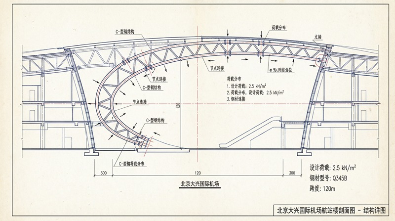
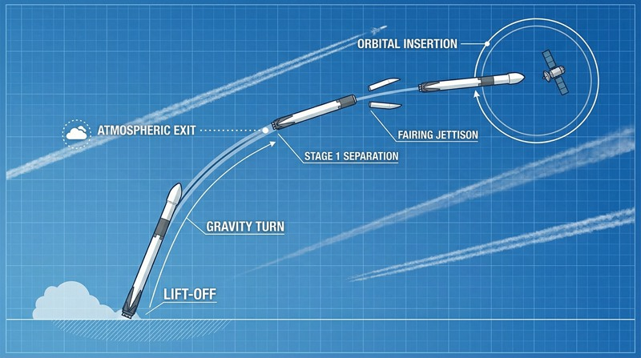
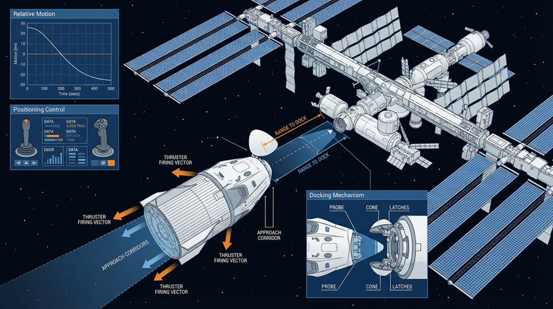

返回课程列表
第二课
静力学基础
航天结构与工程建筑的受力分析
⏱️ 约45分钟
火箭发射架承受数千吨推力，空间站在微重力下保持结构完整，摩天大楼抵抗台风和地震——这些都是静力学的杰作。

火箭结构的受力分析
火箭在发射时承受巨大的推力、自身重力和空气阻力。结构设计必须在轻量化和强度之间取得平衡，每减轻1kg结构重量就能多携带1kg载荷。

火箭结构力学
火箭发射的受力分析：
- 推力：猎鹰9号起飞推力约770吨，是自身重量的1.4倍
- 轴向压缩：火箭底部承受全部上方结构和载荷的重量
- 气动载荷：最大动压点（Max-Q）时空气阻力最大，约发射后80秒
- 振动载荷：发动机振动通过结构传递，需要隔振设计
空间站的微重力结构
空间站在轨道上处于微重力环境，结构不需要承受重力，但要承受热应力、对接冲击和姿态调整产生的力。

空间站结构设计
太空结构的特殊力学：
- 热应力：向阳面150°C，背阴面-150°C，温差300°C产生巨大热应力
- 对接冲击：飞船对接时的冲击力需要缓冲机构吸收
- 太阳帆板：展开面积约2500m²，太阳光压产生微小但持续的力
- 碎片防护：微小碎片以7km/s撞击，需要多层防护结构